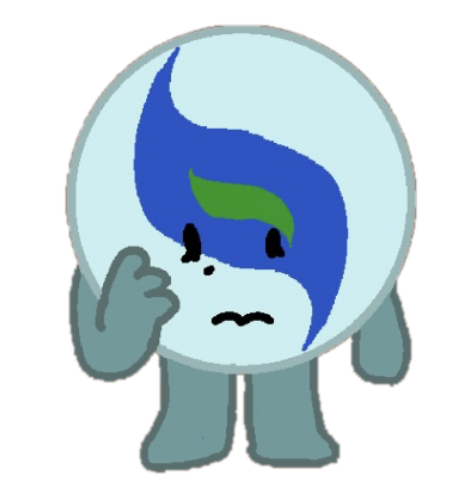

- Alias
- Blue Marble
- Object
- Marble Toy
- Identity
- She/her, female
- Time in the Inbetween
- ~500 blooms
- Favorite food
- —
- Favorite drink
- —
- Hobbies
- —
- Favorite thing to do
- —
- Favorite resident
- Mirror
Blue Marble is soft-spoken, anxious, and gentle. She is easily overwhelmed but deeply caring toward anyone who treats her kindly. After a freak, unknown accident took her arm and left her disabled, she now secludes herself more than ever. She is very aware of how people treat her when she tries to explain what happened to her. They simply don't look at her the same anymore.
Connections

Trivia
- Blue Marble didn't always spend so much time alone.
- When she feels like socializing, she'll seek out Mirror, LP and Cassette, or Dream and -⁵⁄₂₈.
- She seems to know the other residents' schedules quite well. She'll show up for breakfast as the last of the residents are finishing cleaning up, and arrives for dinner even before Mirror sometimes.
- She loves to take advantage of the Library's Quiet Hours.